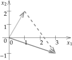

In real life, there is most often more than one variable. We wish to organize dealing with multiple variables in a consistent manner, and in particular organize dealing with linear equations and linear mappings, as those are both rather useful and rather easy to handle. Mathematicians joke that “to an engineer every problem is linear, and everything is a matrix.” And well, they (the engineers) are not wrong. Quite often, solving an engineering problem is figuring out the right finite-dimensional linear problem to solve, which is then solved with some matrix manipulation. Most importantly, linear problems are the ones that we know how to solve, and we have many tools to solve them. For engineers, mathematicians, physicists, and anybody else in a technical field, it is absolutely vital to learn linear algebra.
for \(x\) and \(y\text{.}\) That is, we desire numbers \(x\) and \(y\) such that the two equations are satisfied. Let us perhaps start by adding the equations together to find
In other words, \(x=2\text{.}\) Once we have that, we plug \(x=2\) into the first equation to find \(2-y=2\text{,}\) so \(y=0\text{.}\) OK, that was easy. What is all this fuss about linear equations? Well, try doing this if you have 5000 unknowns 1
One of the downsides of making everything look like a linear problem is that the number of variables tends to become huge.
. Also, we may have such equations not just of numbers, but of functions and derivatives of functions in differential equations. Clearly we need a systematic way of doing things. A nice consequence of making things systematic and simpler to write down is that it becomes easier to have computers do the work for us. Computers are very good at doing lots of repetitive tasks precisely, as long as we figure out a systematic way for them to perform the tasks.
The set of such \(n\)-tuples is the so-called \(n\)-dimensional space, often denoted by \({\mathbb R}^n\text{.}\) Sometimes we call this the \(n\)-dimensional euclidean space 2
Named after the ancient Greek mathematician Euclid of Alexandria (around 300 BC), possibly the most famous of mathematicians; even small towns often have Euclid Street or Euclid Avenue.
. In two dimensions, \({\mathbb R}^2\) is called the cartesian plane 3
Named after the French mathematician René Descartes (1596–1650). It is “cartesian” as his name in Latin is Renatus Cartesius.
. Each such \(n\)-tuple represents a point in the \(n\)-dimensional space. For example, the point \((1,2)\) in the plane \({\mathbb R}^2\) is one unit to the right and two units up from the origin.
When we do algebra with these \(n\)-tuples of numbers we call them vectors 4
A common notation to distinguish vectors from points is to write \((1,2)\) for the point and \(\langle 1,2 \rangle\) for the vector. We write both as \((1,2)\text{.}\)
. Mathematicians are keen on separating what is a vector and what is a point of the space or in the plane, and it turns out to be an important distinction, however, for the purposes of linear algebra we can think of everything being represented by a vector. A way to think of a vector, which is especially useful in calculus and differential equations, is an arrow. It is an object that has a direction and a magnitude. For instance, the vector \((1,2)\) is the arrow from the origin to the point \((1,2)\) in the plane. The magnitude is the length of the arrow. See Figure A.1. If we think of vectors as arrows, the arrow does not always have to start at the origin. If we do move it around, however, it should always keep the same direction and the same magnitude.
As vectors are arrows, when we want to give a name to a vector, we draw a little arrow above it:
\begin{equation}
\vec{x}
\end{equation}
Another popular notation is a bold \(\mathbf{x}\text{,}\) although we will use the little arrows. It may be easy to write a bold letter in a book, but it is not so easy to write it by hand on paper or on the board. Mathematicians often do not even write the arrows. A mathematician would write \(x\) and remember that \(x\) is a vector and not a number. Just like you remember that Bob is your uncle, and you don’t have to keep repeating “Uncle Bob” and you can just say “Bob.” In this book, however, we will call Bob “Uncle Bob” and write vectors with the little arrows.
The magnitude can be computed using the Pythagorean theorem. The vector \((1,2)\) drawn in the figure has magnitude \(\sqrt{1^2+2^2} =
\sqrt{5}\text{.}\) The magnitude is denoted by \(\lVert \vec{x} \rVert\text{,}\) and, in any number of dimensions, it can be computed in the same way:
The fact that we write arrows above vectors allows us to write several vectors \(\vec{x}_1\text{,}\)\(\vec{x}_2\text{,}\) etc., without confusing these with the components of some other vector \(\vec{x}\text{.}\)
So where is the algebra from linear algebra? Well, arrows can be added, subtracted, and multiplied by numbers. First we consider addition. If we have two arrows, we simply move along one, and then along the other. See Figure A.2.
FigureA.2.Adding the vectors \((1,2)\text{,}\) drawn dotted, and \((2,-3)\text{,}\) drawn dashed. The result, \((3,-1)\text{,}\) is drawn as a solid arrow.
It is rather easy to see what it does to the numbers that represent the vectors. Suppose we want to add \((1,2)\) to \((2,-3)\) as in the figure. We travel along \((1,2)\) and then we travel along \((2,-3)\text{.}\) What we did was travel one unit right, two units up, and then we travelled two units right, and three units down (the negative three). That means that we ended up at \(\bigl(1+2,2+(-3)\bigr) = (3,-1)\text{.}\) That is how addition always works:
Subtracting is similar. What \(\vec{x}- \vec{y}\) means visually is that we first travel along \(\vec{x}\text{,}\) and then we travel backwards along \(\vec{y}\text{.}\) See Figure A.3. It is like adding \(\vec{x}+ (- \vec{y})\) where \(-\vec{y}\) is the arrow we obtain by erasing the arrow head from one side and drawing it on the other side, that is, we reverse the direction. In terms of the numbers, we simply go backwards both horizontally and vertically, so we negate both numbers. For instance, if \(\vec{y}\) is \((-2,1)\text{,}\) then \(-\vec{y}\) is \((2,-1)\text{.}\)
FigureA.3.Subtraction, the vector \((1,2)\text{,}\) drawn dotted, minus \((-2,1)\text{,}\) drawn dashed. The result, \((3,1)\text{,}\) is drawn as a solid arrow.
Another intuitive thing to do to a vector is to scale it. We represent this by multiplication of a number with a vector. Because of this, when we wish to distinguish between vectors and numbers, we call the numbers scalars. For example, suppose we want to travel three times further. If the vector is \((1,2)\text{,}\) travelling 3 times further means going 3 units to the right and 6 units up, so we get the vector \((3,6)\text{.}\) We just multiply each number in the vector by 3. If \(\alpha\) is a number, then
Scaling (by a positive number) multiplies the magnitude and leaves direction untouched. The magnitude of \((1,2)\) is \(\sqrt{5}\text{.}\) The magnitude of 3 times \((1,2)\text{,}\) that is, of \((3,6)\text{,}\) is \(3\sqrt{5}\text{.}\)
If we multiply a vector by a negative scalar, the vector is not only scaled, but it also switches direction. Multiplying \((1,2)\) by \(-3\) means we should go 3 times further but in the opposite direction, so 3 units to the left and 6 units down, or in other words, \((-3,-6)\text{.}\) As we mentioned above, \(-\vec{y}\) is the reverse of \(\vec{y}\text{,}\) and this is the same as \((-1)\vec{y}\text{.}\)
FigureA.4.A vector \(\vec{x}\text{,}\) the vector \(2\vec{x}\) (same direction, double the magnitude), and the vector \(-1.5\vec{x}\) (opposite direction, 1.5 times the magnitude).
We said a vector is a direction and a magnitude. Magnitude is easy to represent, it is just a number. The direction is usually given by a vector with magnitude one. We call such a vector a unit vector. That is, \(\vec{u}\) is a unit vector when \(\lVert \vec{u} \rVert = 1\text{.}\) For instance, the vectors \((1,0)\text{,}\)\((\nicefrac{1}{\sqrt{2}},\nicefrac{1}{\sqrt{2}})\text{,}\) and \((0,-1)\) are all unit vectors.
To represent the direction of a vector \(\vec{x}\text{,}\) we need to find the unit vector in the same direction. To do so, we simply rescale \(\vec{x}\) by the reciprocal of the magnitude: \(\frac{1}{\lVert \vec{x} \rVert} \vec{x}\text{,}\) or more concisely, \(\frac{\vec{x}}{\lVert \vec{x} \rVert}\text{.}\)
A vector-valued function\(F\) is a rule that takes a vector \(\vec{x}\) and returns another vector \(\vec{y}\text{.}\) For example, \(F\) could be a scaling that doubles the size of vectors:
If \(F\) is a mapping that takes vectors in \({\mathbb R}^2\) to \({\mathbb R}^2\) (such as the above), we write
\begin{equation}
F \colon {\mathbb R}^2 \to {\mathbb R}^2 .
\end{equation}
The words function and mapping are used rather interchangeably, although more often than not, mapping is used when talking about a vector-valued function, and the word function is often used when the function is scalar-valued.
A beginning student of mathematics (and many a seasoned mathematician) who sees an expression such as
\begin{equation}
f(3x+8y)
\end{equation}
yearns to write
\begin{equation}
3f(x)+8f(y) .
\end{equation}
After all, who has not wanted to write \(\sqrt{x+y} = \sqrt{x} + \sqrt{y}\) or something like that at some point in their mathematical lives? Wouldn’t life be simple if we could do that? Of course we cannot always do that (for example, not with the square roots!) But there are many other functions where we can do exactly the above. Such functions are called linear.
We also call a linear function a linear transformation. If you want to be really fancy and impress your friends, you can call it a linear operator. When a mapping is linear we often do not write the parentheses. We write simply
\begin{equation}
F \vec{x}
\end{equation}
instead of \(F(\vec{x})\text{.}\) We do this because linearity means that the mapping \(F\) behaves like multiplying \(\vec{x}\) by “something.” That something is a matrix.
A column vector is simply an \(m \times 1\) matrix. Similarly to a column vector there is also a row vector, which is a \(1 \times n\) matrix. If we have an \(n \times n\) matrix, then we say that it is a square matrix.
How does a matrix \(A\) relate to a linear mapping? A matrix tells you where certain special vectors go. We give a name to those certain vectors. The standard basis vectors of \({\mathbb R}^n\) are
The reason these are called a basis is that every other vector can be written as a unique linear combination of them. For example, in \({\mathbb R}^3\) the vector \((4,5,6)\) can be written as
So how does a matrix represent a linear mapping? Well, the columns of the matrix are the vectors where the matrix, as a linear mapping, takes \(\vec{e}_1\text{,}\)\(\vec{e}_2\text{,}\) etc. For instance, consider
More generally, if we have an \(n \times m\) matrix \(A\text{,}\) that is, we have \(n\) rows and \(m\) columns, then the mapping \(A \colon {\mathbb R}^m \to {\mathbb R}^n\) takes \(\vec{e}_j\) to the \(j^{\text{th}}\) column of \(A\text{.}\) For example,
What about another vector \(\vec{x}\) that is not in the standard basis? Where does it go? We use linearity. First, we write the vector as a linear combination of the standard basis vectors:
Every linear mapping from \({\mathbb R}^m\) to \({\mathbb R}^n\) can be represented by an \(n \times m\) matrix. You just figure out where it takes the standard basis vectors. Conversely, every \(n \times m\) matrix represents a linear mapping. Hence, we may think of matrices being linear mappings, and linear mappings being matrices.
Or can we? In this book we study mostly linear differential operators, and linear differential operators are linear mappings, although they are not acting on \({\mathbb R}^n\text{,}\) but on an infinite-dimensional space of functions:
\begin{equation}
L f = g .
\end{equation}
For a function \(f\) we get a function \(g\text{,}\) and \(L\) is linear in the sense that
\begin{equation}
L ( f + h) = Lf + Lh, \qquad \text{and} \qquad
L (\alpha f) = \alpha Lf .
\end{equation}
for any number (scalar) \(\alpha\) and all functions \(f\) and \(h\text{.}\)
So the answer is not really. But if we consider vectors in finite-dimensional spaces \({\mathbb R}^n\) then yes, every linear mapping is a matrix. We have mentioned at the beginning of this section, that we can “make everything a vector.” That’s not strictly true, but it is true approximately. Those “infinite-dimensional” spaces of functions can be approximated by a finite-dimensional space, and then linear operators are just matrices. So approximately, this is true. And as far as actual computations that we can do on a computer, we can work only with finitely many dimensions anyway. If you ask a computer or your calculator to plot a function, it samples the function at finitely many points and then connects the dots 5
If you have ever used Matlab, you may have noticed that to plot a function, we take a vector of inputs, ask Matlab to compute the corresponding vector of values of the function, and then we ask it to plot the result.
. It does not actually give you infinitely many values. The way that you have been using the computer or your calculator so far has already been a certain approximation of the space of functions by a finite-dimensional space.
That is, you take the entries in a row of the matrix, you multiply them by the entries in your vector, you add things up, and that’s the corresponding entry in the resulting vector.
Suppose a linear mapping \(F \colon {\mathbb R}^2 \to {\mathbb R}^2\) takes \((1,0)\) to \((2,-1)\) and it takes \((0,1)\) to \((3,3)\text{.}\) Where does it take
Suppose a linear mapping \(F \colon {\mathbb R}^3 \to {\mathbb R}^2\) takes \((1,0,0)\) to \((2,1)\text{,}\) it takes \((0,1,0)\) to \((3,4)\text{,}\) and it takes \((0,0,1)\) to \((5,6)\text{.}\) Write down the matrix representing the mapping \(F\text{.}\)
Suppose that a mapping \(F \colon {\mathbb R}^2 \to \mathbb{R}^2\) takes \((1,0)\) to \((1,2)\text{,}\)\((0,1)\) to \((3,4)\text{,}\) and \((1,1)\) to \((0,-1)\text{.}\) Explain why \(F\) is not linear.
(challenging) Let \({\mathbb R}^3\) represent the space of quadratic polynomials in \(t\text{:}\) a point \((a_0,a_1,a_2)\) in \({\mathbb R}^3\) represents the polynomial \(a_0 + a_1 t + a_2 t^2\text{.}\) Consider the derivative \(\frac{d}{dt}\) as a mapping of \({\mathbb R}^3\) to \({\mathbb R}^3\text{,}\) and note that \(\frac{d}{dt}\) is linear. Write down \(\frac{d}{dt}\) as a \(3 \times 3\) matrix.
Suppose a linear mapping \(F \colon {\mathbb R}^2 \to {\mathbb R}^2\) takes \((1,0)\) to \((1,-1)\) and it takes \((0,1)\) to \((2,0)\text{.}\) Where does it take